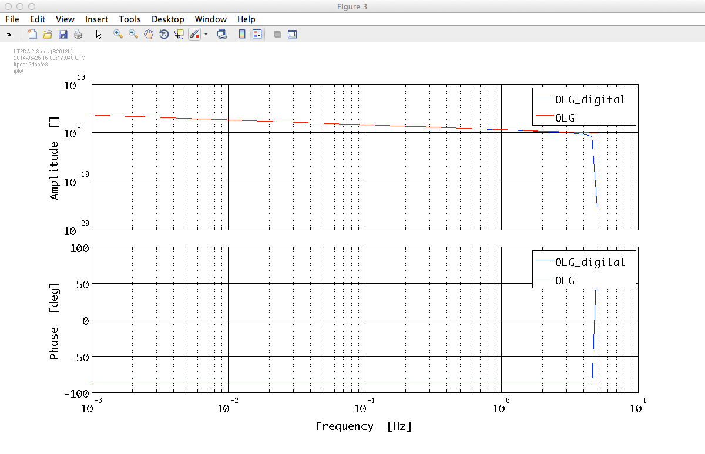
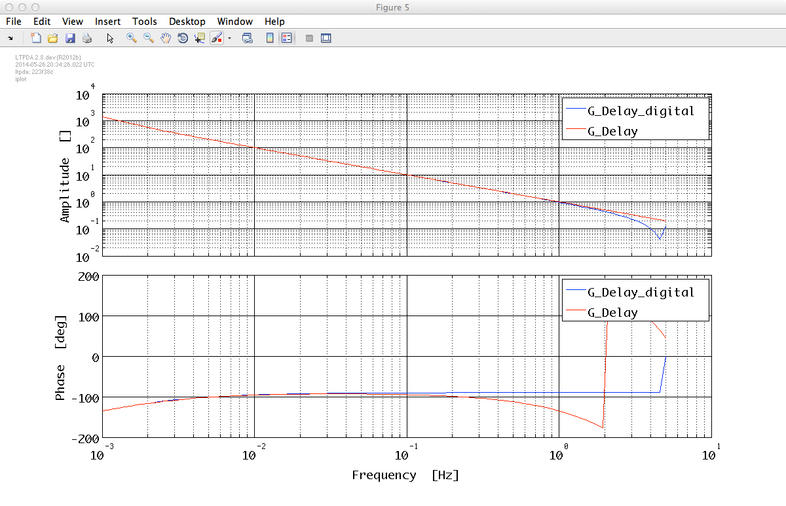
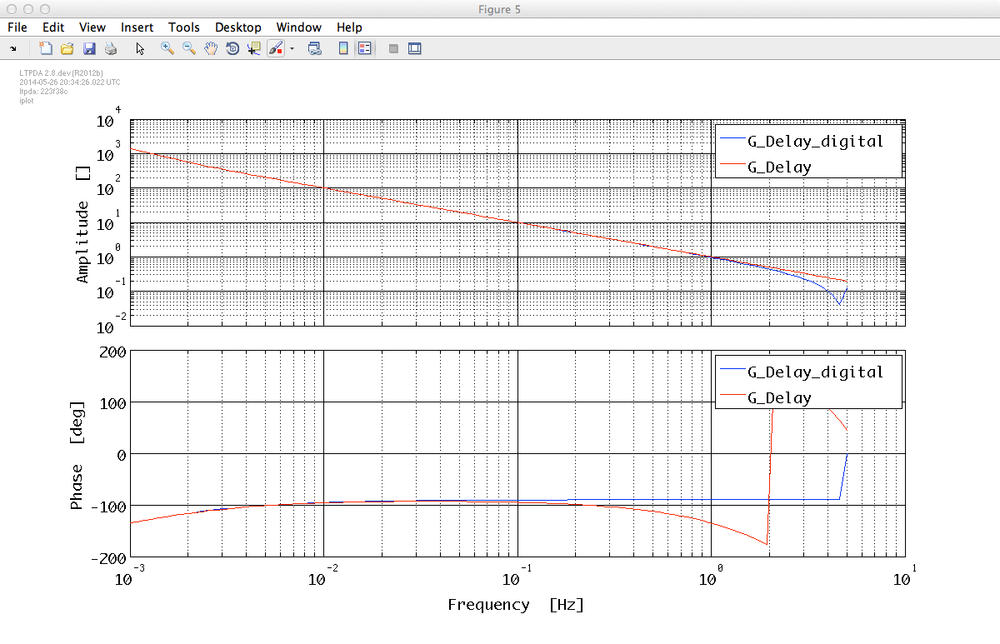

| LTPDA Toolbox™ | contents | |
In the following we want to show how to go from continuous (s) domain to digital (z) domain when working with transfer function models. We will keep working with the models from our previous closed loop example.
Once we have our continuous models it is fairly simple to obtain their digital representation. We can insert them into the miir constructor specifying a sampling frequency, for instance fs = 10 Hz, as follows:
G_digital = miir(G, plist('fs', 10));
H_digital = miir(H, plist('fs', 10));
OLG_digital = miir(OLG, plist('fs', 10));
We want to check if the discretization went right, but in order to do that we need to compute the response for the digital and the continuous versions separately, since the resp method can not process inputs from different types. We can do the following:
%% Compare response
pl_resp = plist('f1', 1e-3, 'f2', 5, 'nf', 100);
% Digital
rG_digital = resp(G_digital, pl_resp);
rG_digital.setName('G_digital');
rH_digital = resp(H_digital, pl_resp);
rH_digital.setName('H_digital');
rOLG_digital = resp(OLG_digital, pl_resp);
rOLG_digital.setName('OLG_digital');
% Continuous
rG = resp(G, pl_resp);
rG.setName('G');
rH = resp(H, pl_resp);
rH.setName('H');
rOLG = resp(OLG, pl_resp);
rOLG.setName('OLG');
% Plot
iplot(rG_digital, rG)
iplot(rH_digital, rH)
iplot(rOLG_digital, rOLG)



Once the comparison is done, one is usually interested in the coefficients of the digital implementation. These are directly accessible as, for example, Gd.a or Gd.b
>> Gd.a
ans =
3.99874501384116 2.51248480253707e-06 -3.99874250135635
>> Gd.b
ans =
1 0.000628121200622944 -0.999371878799377
The current version of the toolbox (v2.8) is not able to translate a model with a delay into a digital filter. In such a case, the delay is ignored and a warning is thrown.
M: running miir/miir
!!! PZmodel delay is not used in the discretization
 

| |
How to filter data | By defining filter properties | |
©LTP Team